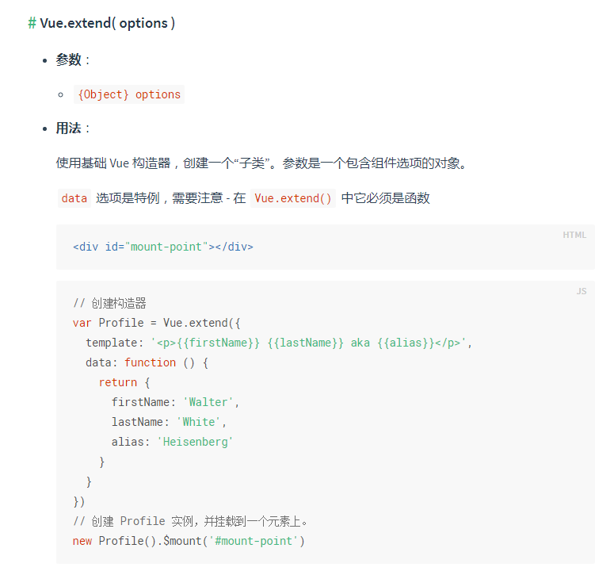
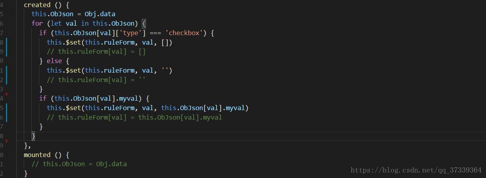
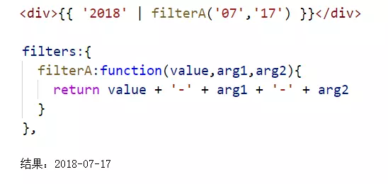
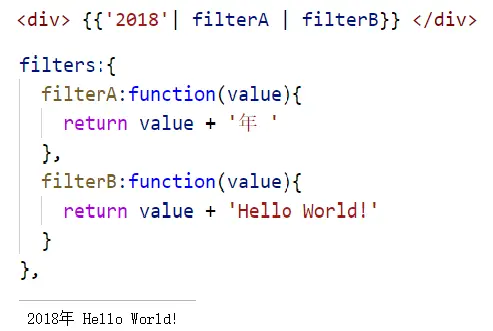

1.vue.extend( options ) 用于用函数构建一个组件

2.Vue.nextTick( [callback, context] ) 在下次 DOM 更新循环结束之后执行延迟回调 在修改数据之后立即使用这个方法，获取更新后的 DOM。

3.Vue.set( target, propertyName/index, value )
可以动态的给data中的属性设置默认值
也可给data中定义的数组或者对象，添加或删除元素

4.Vue.delete( target, propertyName/index )
删除对象的属性。如果对象是响应式的，确保删除能触发更新视图。这个方法主要用于避开 Vue 不能检测到属性被删除的限制，但是你应该很少会使用它
5.Vue.directive( id, [definition] )

bind: 只调用一次，指令第一次绑定到元素时调用，用这个钩子函数可以定义一个在绑定时执行一次的初始化动作。
inserted: 被绑定元素插入父节点时调用（父节点存在即可调用，不必存在于 document 中）。
update: 被绑定元素所在的模板更新时调用，而不论绑定值是否变化。通过比较更新前后的绑定值，可以忽略不必要的模板更新（详细的钩子函数参数见下）。
componentUpdated: 被绑定元素所在模板完成一次更新周期时调用。
unbind: 只调用一次， 指令与元素解绑时调用。
以下是实现一个拖拽的功能
inserted: 被绑定元素插入父节点时调用（父节点存在即可调用，不必存在于 document 中）。
<style type="text/css">
.one,.two{
height:100px;
width:100px;
border:1px solid #000;
position: absolute;
-webkit-user-select: none;
-ms-user-select: none;
-moz-user-select: -moz-none;
cursor: pointer;
}
.two{
left:200px;
}
</style>
<div id="app">
<div class="one" v-drag>拖拽one</div>
<div class="two" v-drag>拖拽two</div>
</div>
Vue.directive('drag', {
inserted:function(el){
el.onmousedown=function(e){
let l=e.clientX-el.offsetLeft;
let t=e.clientY-el.offsetTop;
document.onmousemove=function(e){
el.style.left=e.clientX-l+'px';
el.style.top=e.clientY-t+'px';
};
el.onmouseup=function(){
document.onmousemove=null;
el.onmouseup=null;
}
}
}
})
new Vue({
el:'#app'
});
6.Vue过滤器 filter 通常用于格式化文本

使用方法 双参数和单参数


7.Vue.component( id, [definition] )

8.Vue.use( plugin ) 用于安装vue插件

9.Vue.mixin( mixin )
.
Vue.compile( template )
将一个模板字符串编译成 render 函数。只在完整版时可用。
Vue.observable( object )
让一个对象可响应。Vue 内部会用它来处理 data 函数返回的对象
Vue.version
返回vue的版本